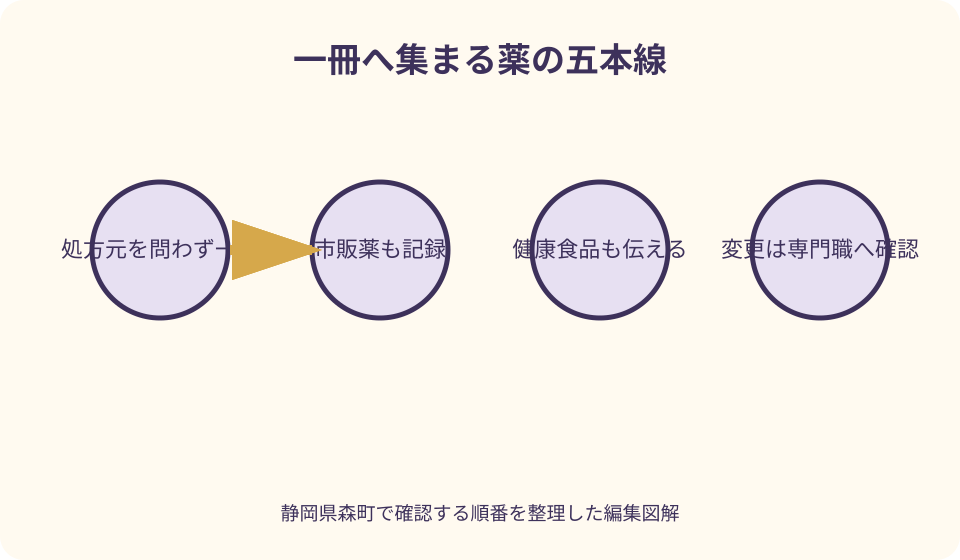
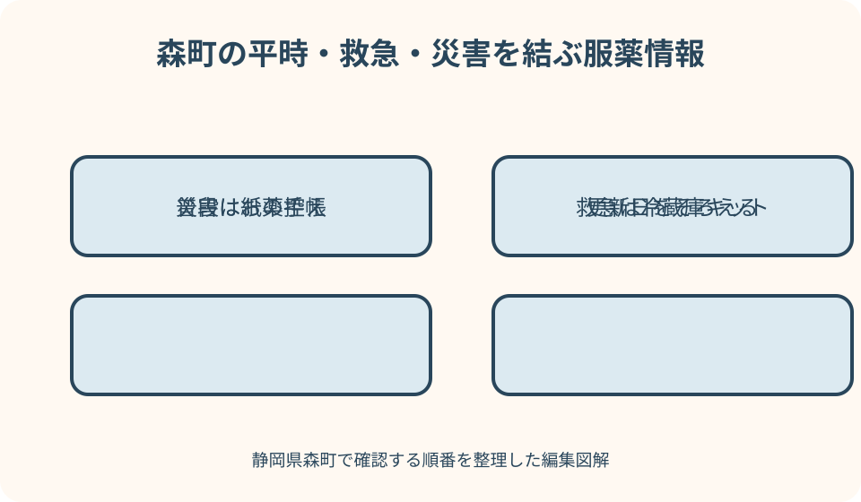

健康・医療・保険｜最終確認 2026-08-10
静岡県森町のお薬手帳と医療情報｜家族で安全に共有する服薬記録
お薬手帳は、処方シールを貼るだけの冊子ではありません。薬の名称、量、回数、使用期間に加え、市販薬、健康食品、アレルギーや過去に困った症状を、医師と薬剤師へ伝えるための記録です。公立森町病院と森町公式は、複数の医療機関へ通っていても手帳を一冊にまとめ、受診時に提示するよう案内しています。家族が支える場合も、薬を変えるのではなく、最新版を正確に運ぶ役割を担います。

編集イラスト最初に結論：本人ごとに一冊を決める
お薬手帳は病院別、薬局別に分けず、本人ごとに一冊へまとめるのが基本です。公立森町病院も、複数の病院へ通う場合でも一冊にまとめるよう案内しています。
紙の手帳と電子版を併用するなら、どちらを主記録とするか決めます。二つに薬が分散したままでは、受診先が全体を確認できないため、相互に最新情報を反映します。
家族が作る一覧は、お薬手帳を置き換える処方指示書ではありません。目的は、本人が説明しにくい場面で、医師や薬剤師が確認すべき原資料と連絡先へ早くたどり着けることです。
薬の量、回数、飲む時刻、中止時期は本人や家族だけで変えません。体調変化、飲み忘れ、残薬がある場合は、処方した医療機関または調剤した薬局へ相談します。
お薬手帳に記録する基本項目
処方薬は、薬名、規格、量、使用回数、使用する時間帯、処方日、日数、処方した医療機関、調剤薬局を記録します。薬局のシールは説明が読める向きで貼ります。
飲み薬だけでなく、塗り薬、貼り薬、目薬、吸入薬、注射薬、頓服も対象です。使う場所や条件が重要な薬は、薬剤師から受けた説明を余白へ書きます。
本人情報として、氏名、生年月日、連絡先、緊急連絡先、かかりつけ医、かかりつけ薬局を記します。住所や電話番号が変わったら訂正日を添えます。
アレルギーと過去に薬で困った経験は、薬名と起きた症状、時期を分かる範囲で書きます。分からない事項を推測で埋めず、『薬名不明』『時期不明』と明示します。
最新の服薬一覧を作る
一覧の先頭には更新日を書きます。『現在使用中』と『中止・終了』を別欄にし、古い薬を削除する代わりに、いつ、誰の指示で変更されたかを残します。
薬袋と錠剤の見た目だけで薬名を決めないでください。同じ成分でも製品や外観が変わることがあり、一般名処方では薬局で受け取る製品が変わる場合があります。
朝・昼・夕・就寝前という欄だけでなく、食前、食後、症状がある時など、処方どおりの条件を転記します。家族が分かりやすく言い換える際も、元の説明を消しません。
一覧を更新したら、お薬手帳、薬袋、実際に自宅にある薬を照合します。食い違いがあれば家族が選別せず、次の受診や薬局相談でそのまま提示します。
中止薬と残薬を消さずに残す
服用が終わった薬も、すぐに記録から消さない方が経過を伝えやすくなります。終了日と理由が医師から説明された場合は、その言葉を簡潔に残します。
『効かなかった』『合わなかった』と本人が感じた場合も、医学的な結論へ書き換えません。使用期間、飲んだ後の症状、相談先、受けた指示を事実として並べます。
自宅に残っている薬は、名称、使用期限、残数を薬剤師へ見せます。別の症状が出た時に家族判断で再使用したり、他人へ渡したりしないでください。
入院や退院で処方が変わった場合は特に注意します。公立森町病院も、入院中に薬の内容が変わることがあり、自宅の残薬をよく確認するよう案内しています。
市販薬・健康食品も同じ記録へ入れる
ドラッグストアで買った市販薬、漢方薬、ビタミン剤、サプリメント、健康食品も、使用開始日と商品名を記録します。処方薬との組合せを薬剤師が確認する材料になります。
毎日使わない鎮痛薬、かぜ薬、睡眠改善薬、胃腸薬も対象です。『時々』だけでなく、一回量と直近に使った日を分かる範囲で伝えます。
健康食品は薬ではないから無関係とは限りません。森町公式も、飲み合わせでは健康食品への注意が必要だと案内しています。外箱や成分表示の写真が役立ちます。
市販薬を選ぶ際は、持病、治療中、妊娠・授乳、普段の薬、食物・薬のアレルギーを薬剤師または登録販売者へ伝えます。家族の余りを試さないでください。
アレルギーと副作用歴を具体的に書く
『薬のアレルギーあり』だけでは、医療者が同じ成分を避けるための情報が不足します。分かる範囲で薬名、症状、使用から症状までの時間、受診の有無を書きます。
じんましん、息苦しさ、吐き気、眠気など、本人が経験した表現をそのまま残します。それが副作用かアレルギーかを家族が分類せず、医師や薬剤師に評価してもらいます。
薬以外の食物、造影剤、医療材料などで反応した経験も、別欄に記録します。何に反応したか不明なら、その時の病院とおおよその年月を手掛かりにします。
新しい症状が出たときは、使った薬、開始日、最終使用時刻、症状、写真の有無をまとめて相談します。緊急性がある症状では記録作業を続けず、救急へ連絡します。
複数の医療機関・歯科へ毎回見せる
内科だけでなく、整形外科、眼科、皮膚科、歯科などすべての受診でお薬手帳を提示します。処置や新しい薬を安全に検討するため、他科の処方も必要だからです。
新しい医療機関では、現在の一覧と過去のアレルギー・困った症状のページを開いて渡します。受付で預けるだけでなく、診察時に医師が確認できたかを確かめます。
別の医療機関で薬が追加・中止されたら、次のかかりつけ医受診で知らせます。公立森町病院も、他院を急いで受診した場合は次回受診時に投薬内容を伝えるよう求めています。
紹介状があっても、お薬手帳が不要になるとは限りません。紹介状作成後に薬が変わる場合があるため、受診当日の最新版を持参します。
かかりつけ薬局へ情報を集める
森町は、かかりつけ薬局を持ち、お薬手帳を一冊にまとめることで、服薬状況の確認と薬剤管理へつなげるよう案内しています。処方元が複数でも相談先を一つ持てます。
薬局では、処方薬だけでなく市販薬、健康食品、残薬、飲みにくさを伝えます。錠剤を割る、粉へ変えるなどの対応可否は、薬ごとに薬剤師が確認します。
薬が重複しているように見えても、目的や使用時期が異なる場合があります。家族が片方を止めず、処方せんと手帳を薬剤師へ見せて医師への照会が必要か判断してもらいます。
薬局を変更したときも、過去の手帳を持参します。新しい手帳を受け取って二冊になった場合は、どちらを今後使うか薬剤師と決め、古い方には終了日を記します。

受診・入院の持ち物にする
通常受診では、お薬手帳を診察券や資格確認書と同じ場所へ準備します。公立森町病院の紹介受診案内でも、お薬手帳の持参が示されています。
入院時は、普段使っているすべての薬、お薬手帳、健康食品やサプリメントを持参するよう同院が案内しています。持参量や受付方法は入院先の指示へ従います。
入院前に使用していた薬を継続するか中止するかは治療に関係するため、病院側が判断します。家族が自宅薬を仕分けして一部だけ持たせないでください。
退院時には、新しく始まった薬、止めた薬、自宅残薬の扱い、次回処方までの日数を確認します。退院処方の説明と手帳の記録を照合してから帰宅後の一覧を更新します。
救急受診で伝える順番
公立森町病院は救急受診時の持ち物に、他の医療機関で処方された薬等が分かるお薬手帳を挙げています。可能なら電話連絡時にも現在の薬があることを伝えます。
緊急時は、症状、発症時刻、本人の氏名・生年月日、来院方法を先に伝えます。薬の一覧を読むために救急要請を遅らせないでください。
本人が話せない場合に備え、手帳の表紙へ緊急連絡先を記し、家族は保管場所を共有します。アレルギー・過去の重大な反応は見つけやすいページへまとめます。
救急隊や医療機関には、現物の手帳または最新の控えを渡します。口頭で薬の色や形を説明するより、薬局のシールや薬袋を提示する方が正確です。
森町の救急医療情報キットを活用する
森町の高齢者向け在宅福祉サービスには、救急時に必要な情報を保管する救急医療情報キットがあります。緊急連絡先、かかりつけ医、持病、服薬情報などを冷蔵庫の見えやすい場所へ備えるものです。
利用対象や配布方法は町の高齢者福祉担当へ確認します。対象外の場合も、同じ考え方で本人用の緊急情報票を作り、家族と保管場所を決められます。
キット内の服薬情報は、薬が変わるたびに更新します。古い一覧が残ると救急時に誤解を招くため、更新日を大きく書き、お薬手帳本体の場所も記します。
冷蔵庫へ貼る情報は、来訪者にも見える可能性があります。病名や個人番号を必要以上に表へ出さず、救急に必要な範囲と詳しい原資料を分けて保管します。
災害時に持ち出せる控えを作る
地震や大雨で自宅を離れる場合に備え、お薬手帳の最新ページ、本人情報、アレルギー、処方元、薬局連絡先の控えを非常持出品へ入れます。
写真やPDFの控えは役立ちますが、停電、通信障害、端末の電池切れに備えて紙も用意します。更新日を記し、古い控えを防災袋から取り除きます。
常用薬の備え方や追加処方は、薬の種類と保管条件によって異なります。家族が日数を決めて取り分けず、平時に医師・薬剤師へ相談してください。
避難先で薬が不足したときは、自己判断で他人の薬を使わず、救護所、医療機関、薬剤師へ手帳や控えを示します。森町の地域防災計画も災害時の薬剤師による服薬指導を想定しています。
電子版お薬手帳を選ぶとき
電子版お薬手帳は、スマートフォンで服薬歴や健康情報を管理し、医師・薬剤師へ共有できる仕組みです。厚生労働省はガイドラインに沿うサービスの一覧を公表しています。
マイナポータル連携に対応するアプリでは、本人の承諾により、各医療機関・薬局で交付された薬剤記録を呼び出せます。ただし対応機能はアプリごとに確認が必要です。
電子処方せん対応薬局の利用では薬の情報を早く確認できる機能がありますが、市販薬、健康食品、過去の症状は自分で追記が必要な場合があります。
機種変更、故障、サービス終了へ備え、データの移行・出力方法を確認します。家族共有機能を使う場合は、誰が閲覧できるか、同意をどう取り消すかも事前に見ます。

マイナポータルの薬剤情報との違い
マイナポータルの薬剤情報は、医療機関・薬局から登録された情報を確認する手段です。本人が記した副作用の経過や、市販薬・健康食品の全履歴まで自動的にそろうとは限りません。
お薬手帳アプリと連携できる場合も、初回設定と本人の承諾が必要です。家族が本人の知らないところで連携設定を進めず、共有範囲を一緒に確認します。
画面に薬が見えないときは、飲んでいないと判断しません。登録の時期や医療機関の対応状況を考え、紙の手帳、薬袋、本人の説明を照合します。
救急時にマイナンバーカードがあっても、すべての情報を必ず閲覧できるとは限りません。最新ページの紙控えを持つ意義は残ります。
家族共有は本人の同意から始める
服薬情報は個人の医療情報です。本人が判断できる状態なら、誰に、何を、どの場面で共有するかを本人と決めます。家族だから無制限に閲覧してよいとは考えません。
共有する人を、日常の管理を支える人、通院へ同行する人、緊急連絡を受ける人に分けます。それぞれが必要とする情報量は異なります。
家族グループへ手帳の全ページを送るより、最新版の保管場所と緊急連絡先を共有し、詳しい内容は必要時に本人同意で見せる方法があります。
認知機能の低下などで本人意思の確認が難しいときは、かかりつけ医、薬剤師、地域包括支援センター、介護支援専門員へ相談します。家族一人だけで管理権限を決めないでください。
在宅療養・介護で更新担当を決める
訪問診療、訪問看護、通所サービス、薬局など複数職種が関わる家庭では、誰が手帳へ最新情報を反映するかを決めます。更新日と記入者の関係を残します。
一包化された薬は袋の日付、服用時点、残数を確認しやすい一方、中身を家族が見分けて変更することはできません。飲みにくさや残りは薬剤師へ伝えます。
介護サービスの連絡帳とお薬手帳へ異なる内容を書かないよう、処方変更があった日に両方を更新します。正式な指示は医療機関・薬局の資料へ戻れるようにします。
公立森町病院薬剤科は訪問薬剤管理指導にも取り組んでいます。自宅での管理が難しい場合は、利用条件をかかりつけ医や薬局へ相談します。
飲み忘れ・飲み間違いが起きたとき
飲み忘れに気付いても、二回分をまとめて飲まないよう森町公式は注意しています。薬ごとの対応は異なるため、受け取る際に薬剤師へ確認しておきます。
間違って多く使った、別の人の薬を飲んだ、子どもが誤飲した場合は、薬名、量、時刻、本人の状態を確認し、専門の相談機関や医療機関へ連絡します。
家族が発見したときは、吐かせる、別の薬で打ち消すなど独自の対応をしません。相談先の指示に従い、薬の現物、外箱、手帳を用意します。
同じ間違いを防ぐため、原因を責める記録ではなく、似た袋、暗い場所、複雑な時刻など環境を記します。仕分け方法の変更は薬剤師・介護職と相談します。
体調変化と副作用が心配なとき
薬を使った後に異常を感じたら、薬名、使用時刻、症状が始まった時刻、経過を記録し、医師または薬剤師へ詳しく伝えます。PMDAもこの情報整理を案内しています。
症状が軽く見えても、薬を続けるか止めるかをウェブ記事で決められません。処方元や薬局へ連絡し、緊急性と次の服用について具体的な指示を受けます。
呼吸困難、意識の変化、急激な腫れなど切迫した状態では、記録を完成させてから連絡する必要はありません。119番など適切な救急手段を優先します。
PMDAには患者からの副作用報告制度もありますが、報告は受診や治療の代わりではありません。まず医療者へ相談し、必要なら薬のシートや手帳を準備して報告します。
服薬記録を整える良い点
良い点は、複数の処方元がある場合でも、医師と薬剤師が使用中の薬を一度に確認しやすくなることです。重複や組合せを専門職が検討する材料になります。
過去のアレルギーや困った症状を具体的に残せば、本人が緊張して説明できない受診でも手掛かりを渡せます。記憶が曖昧な部分も、曖昧なまま示せます。
救急医療情報キットとお薬手帳の保管場所を結べば、家族が不在でも救急対応へ必要な情報を届けやすくなります。更新日をそろえることが前提です。
災害用の紙控えと電子版を持てば、一方が使えない場面を補えます。平時の受診で実際に提示し、読みづらい箇所を直しておくと非常時にも役立ちます。
森町の案内に注文したい点
注文したい点は、森町公式に薬の正しい使い方、一冊化、救急医療情報キットの情報がそれぞれある一方、家族が一連の手順として読める入口が分かれていることです。
お薬手帳の具体的な記入例、市販薬・健康食品の書き方、変更日を残す方法を一枚でダウンロードできれば、高齢家族の支援に使いやすくなります。
救急医療情報キットは重要ですが、対象者、申込み、更新方法、古い用紙の交換時期を同じページで明示してほしいところです。電子版との併用例もあると安心です。
災害時の常用薬についても、住民が勝手に備蓄量を決めないよう、平時に薬局へ相談する項目と避難所での提示資料を防災案内からたどれると実用的です。
手帳がない・情報がそろわない場合の代案・結論
お薬手帳がない場合は、薬袋、処方内容の説明書、実物の外箱、利用した薬局名を集めます。錠剤の写真だけで薬を特定しようとしないでください。
複数冊に分かれている場合は、すべてをかかりつけ薬局へ持参し、今後使う一冊を決めます。家族がシールを貼り替えて処方履歴を失わないようにします。
電子版を開けない場合に備え、直近の一覧を紙へ出力します。アプリのパスワードを家族へ無条件に渡すのではなく、本人同意と緊急時の使い方を決めます。
結論として、本人一人に一冊、処方薬以外も記録、変更履歴は残す、受診のたびに提示、判断は医師・薬剤師へ戻すという五点を守れば、家族の共有は安全性を支える形になります。
大石の視点：家族の役割は運ぶこと
大石の視点では、家族の役割は薬を選ぶことではなく、最新の情報を医療者へ運び、受けた指示を日常へ戻すことです。決める人と支える人を混同しません。
森町北部から通院する家庭では、薬だけを受け取りに行く負担も小さくありません。次回受診日、残日数、送迎者を記録し、切れる直前に慌てない仕組みを作ります。
『きちんと飲めたか』を責める会話より、袋が開けにくい、昼は外出している、眠くなるのが心配という事実を集める方が、薬剤師へ相談できる材料になります。
一冊の手帳が家族の監視簿になれば、本人は見せたくなくなります。本人が必要な範囲を選び、家族は保管場所と緊急時の手順を知る、という距離が長く続きます。
二つの固有図解で共有を確認する
一つ目の図解は『一冊へ集まる薬の五本線』です。内科、歯科、他院処方、市販薬、健康食品を中央のお薬手帳へ集め、かかりつけ薬局で確認する流れを描きます。
二つ目は『森町の平時・救急・災害の三つの置き場所』です。普段持つ手帳、冷蔵庫の救急医療情報キット、非常持出袋の紙控えを、同じ更新日で結びます。
図には服用量の変更例を載せません。変更は処方医・薬剤師の確認が必要だと中央へ示し、家族が図だけで中止や再開を決めない構成にします。
印刷した図の余白へ、最終更新日、かかりつけ医、薬局、手帳の保管場所を書けます。具体的な病名や全薬名は別紙にし、来客から見えにくくします。
一次情報の読み分け
森町の『薬は正しく使いましょう』は、量・期間・タイミング、飲み合わせ、保管、飲み忘れ、お薬手帳の基本を確認する町の入口です。個別の服用指示は処方元へ戻します。
公立森町病院薬剤科のページは、一冊化、市販薬・健康食品、副作用メモ、入院時の持参を具体的に示します。救急時の持ち物は病院の救急受診ページで別に確認します。
森町の高齢者在宅福祉ページは救急医療情報キット、地域防災計画は災害時の薬剤師・医薬品供給体制を確かめる資料です。個人の薬の確保量を決める資料ではありません。
厚生労働省の電子版お薬手帳ページとPMDAの薬の知識は、電子連携、副作用、市販薬を含む全国共通の情報です。森町の地域窓口と組み合わせて使います。
まとめ：記録・提示・更新の三段階
記録では、本人ごとに一冊へまとめ、処方薬、市販薬、健康食品、アレルギー、過去の困った症状、通院先、薬局、緊急連絡先を入れます。
提示では、病院、医院、歯科、薬局、入院、救急のすべてで最新版を見せます。マイナンバーカードや紹介状があっても、手帳が不要だと決めつけません。
更新では、薬が変わった日を残し、救急医療情報キットと災害用控えにも反映します。飲み忘れ、残薬、体調変化は記録し、医師・薬剤師へ相談します。
本稿は2026年8月10日時点の一次情報に基づき、服薬の変更や個別の医療判断を示すものではありません。緊急時は記録を完成させるより救急連絡を優先してください。
公式情報・確認先
掲載内容は次の一次情報を基礎に整理しました。営業、料金、催し、交通は変わるため、出発前または手続き前にリンク先で最新情報を確認してください。
- 薬は正しく使いましょう！（静岡県森町、2026-08-10確認）
- 医療費の削減について（静岡県森町、2026-08-10確認）
- 高齢者の在宅福祉サービスについて（静岡県森町、2026-08-10確認）
- 森町地域防災計画（静岡県森町、2026-08-10確認）
- 薬剤科（公立森町病院、2026-08-10確認）
- 救急受診について（公立森町病院、2026-08-10確認）
- 電子版お薬手帳（厚生労働省、2026-08-10確認）
- 知っておきたい薬の知識（医薬品医療機器総合機構、2026-08-10確認）
- 患者の皆様からの医薬品副作用報告（医薬品医療機器総合機構、2026-08-10確認）